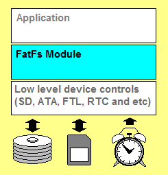

FatFs - 通用FAT文件系统模块
本站是该项目的重构版本，旨在提供更现代化的阅读体验。原官网地址：https://elm-chan.org/fsw/ff/

FatFs 是一个面向小型嵌入式系统的通用 FAT/exFAT 文件系统模块。它完全遵循 ANSI C (C89) 标准编写，并与磁盘I/O层完全分离。因此，它独立于具体硬件平台和存储设备，可以轻松集成到资源有限的微控制器中，如 8051, PIC, AVR, ARM, Z80, RX 等。
主要特性
- 兼容 DOS/Windows 的 FAT/exFAT 文件系统。
- 平台独立，易于移植。
- 极小的代码和工作区内存占用。
- 丰富的配置选项，支持：
- 长文件名（支持 ANSI/OEM 或 Unicode）。
- exFAT 文件系统。
- 为实时操作系统（RTOS）提供线程安全。
- 多卷（物理驱动器和分区）。
- 可变扇区大小。
- 多种代码页。
核心API
FatFs 提供了一套标准的、类似 stdio.h 的文件操作接口。
- 文件访问:
f_open,f_close,f_read,f_write,f_lseek等。 - 目录访问:
f_opendir,f_readdir等。 - 文件管理:
f_stat,f_unlink,f_rename,f_mkdir等。 - 卷管理:
f_mount,f_mkfs,f_getfree等。
资源
- 入门指南: FatFs 应用笔记
- 下载: FatFs R0.16 | 更新历史 | 最新补丁
- 示例项目: 适用于各平台的 FatFs 示例项目
- 官方文档: 微软FAT32规范
- 相关链接: